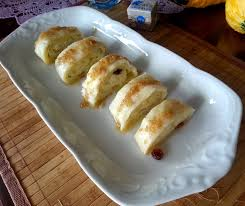

Home
Cottage Cheese Dumplings

Cottage Cheese Struklji or Cheese Dumplings are our favorite Slovenian side dish. We love making them from scratch
with homemade filo pastry, cottage cheese, and sour cream. This recipe works great with store-bought Filo Pastry Ready Rolled Sheets too, but homemade is better. This simple recipe will take you less than an hour to make, and you can easily freeze them or store them in the fridge, so they make a great make-ahead treat too. Serve these Struklji as a savory side dish with meat and sauce, or serve them as a dessert with cream and sweet breadcrumbs.
Ingredients
- 500 g Filo Pastry Ready Rolled Sheets (store bought for ease of use)
- 500 g (2 cups) cottage cheese or ricotta
- 2 eggs
- 180 g (2/3 cup) sour cream
- 1/2 tsp salt
- 1 tbsp Creamy Wheat Farina
- 3 tbsp unsalted butter (for serving)
- 60 g (1/3 cup) breadcrumbs (for serving)
Method
- Use store-bought Filo Pastry Ready Rolled Sheets.
- In a bowl, stir to combine the cottage cheese, sour cream, salt, and farina. Use a spatula to mix into a smooth mixture.
- Divide the pastry in half. Place a kitchen towel onto a clean working surface. Dust the kitchen towel with flour. Place the filo pastry onto the dusted towel and roll it into a 35 cm x 50 cm (14-inch x 20-inch) rectangle. Cut off the thick edge on top and the bottom of the dough. Spread half of the cottage cheese all over the pastry, leaving about 5 cm (2-inch) edge on top.
- Starting at the bottom of the pastry, begin rolling the dumpling into a swiss roll shape. Make sure to tightly roll the dumpling to prevent any filling leakage. Wrap the dumpling in a kitchen towel tightly, then press the ends together and tie with a string to get a wrapped bonbon shape. Repeat the process with the rest of the pastry and filling.
- Pour 2 liters (8 cups) of water into a big pot. Add a teaspoon of salt and place over high heat. Bring to a boil. Carefully add the wrapped dumplings into the pot, making sure the dumplings are entirely covered by water. Simmer for 30 minutes, covered with a lid. Carefully transfer the cooked cheese dumplings from the pot to a baking sheet, set aside for 15 minutes, then carefully unwrap and cut into slices.
- Add butter to a skillet and place over medium heat. When the butter melts, add the breadcrumbs. Cook for 3 - 4 minutes or until golden brown. Serve with the dumplings.